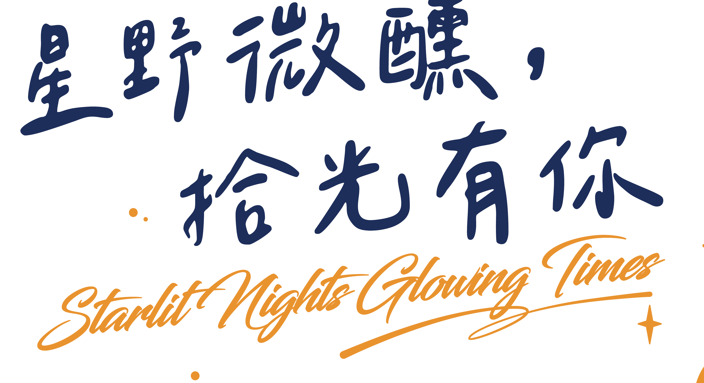
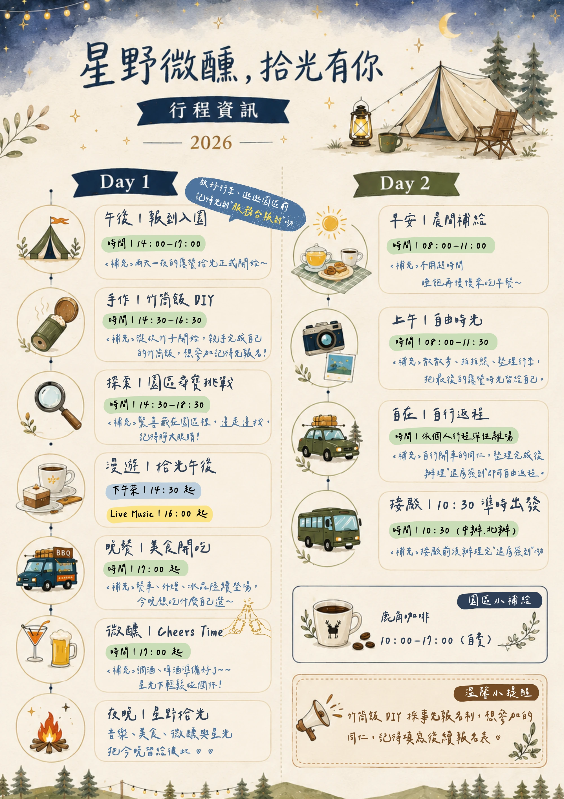
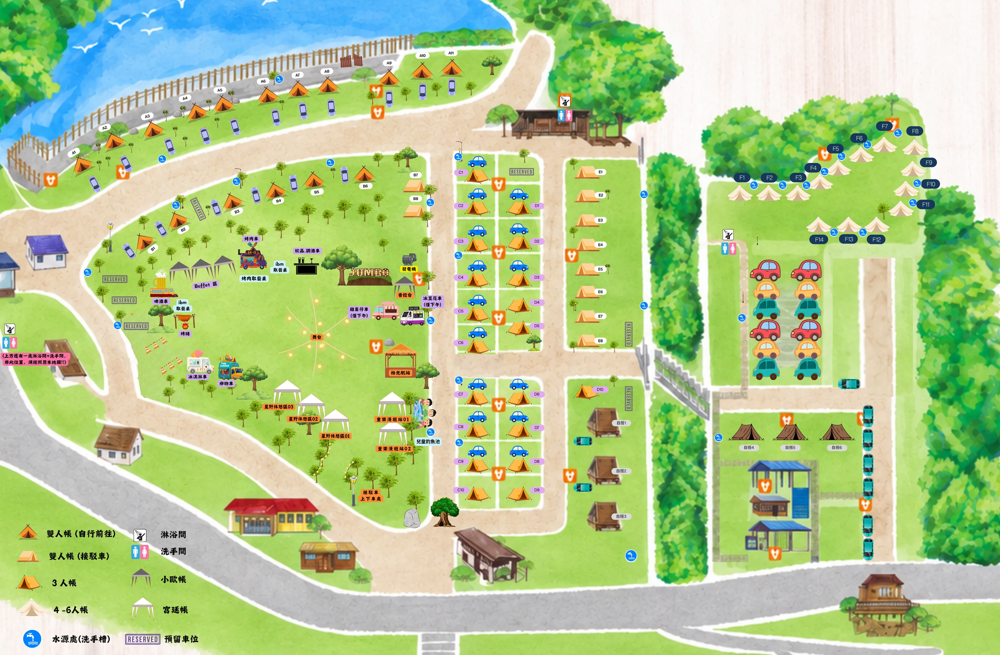
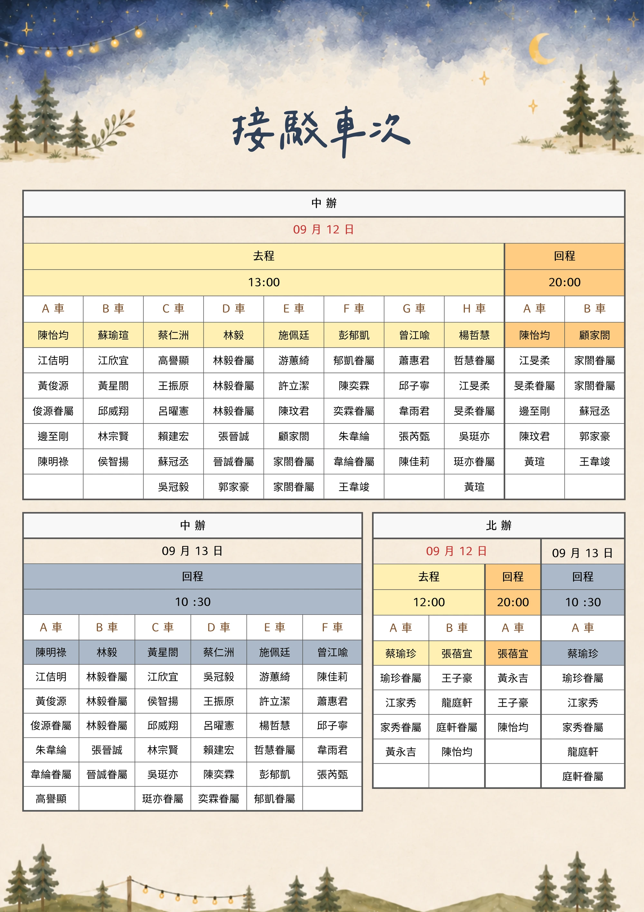
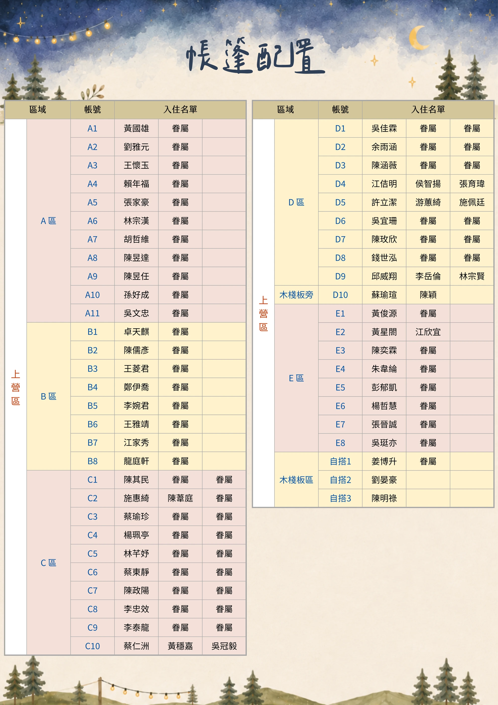
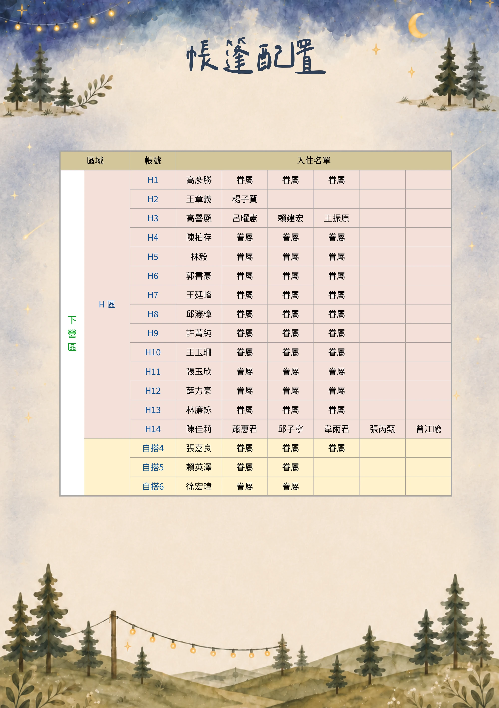

CAMP · CONNECT · GROW
—— 在山與星之間，有一段留給彼此的時光 ——
主題概念
About the Journey
每一位同仁與家人，
都是拼湊未來的不可或缺光景。
在山海間留白漫遊，
於星光下凝聚情感，
將回憶轉化為再次前行的續航動能。
兩天一夜，走進苗栗三義的山城夜色裡。
—— 三種節奏，一場完整的呼吸 ——
三大主軸
Three Pillars
走進自然節奏，低干擾的純粹自由
放下日常步調，讓山風帶路
星空營火下打破邊界，真實交流
讓微醺的夜色拉近每一段距離
在自然中充電，帶著能量返回
將山間拾起的光，化為日常的續航力
—— 每一刻停留，都是專屬回憶 ——
活動亮點
Event Highlights
特色餐車巡禮、美味外燴、精緻下午茶與消暑冰品，全天候滿足味蕾。
星空下的 Cheers Time！特調與啤酒無限暢飲，搭配超嗨啤酒互動挑戰！
午後山風伴隨悠揚琴聲與旋律，讓歌聲流淌在山谷的每一個角落。
穿梭於營位與山間步道，解開藏在園區裡的驚喜線索。
竹子截下時的自然清香、蒸氣升騰時的滿室米香，是山林給予我們最溫柔的餽贈。
全日舌尖饗宴
從白天到夜晚，味蕾的旅程沒有間斷。特色餐車輪番進駐，現點現做的美味外燴溫暖每一餐；午後時分享用精緻下午茶，微醺前先用消暑冰品沁涼一下。不管什麼時間走進園區，總有一份美味等著你。
微醺派對 & 啤酒遊戲
當夜幕低垂、星光灑落，就是微醺派對的開場時刻。特調飲品與啤酒無限暢飲，搭配一場又一場歡樂刺激的啤酒互動遊戲，讓平常拘謹的距離，在笑聲與乾杯聲中悄悄拉近。
Live Music 不插電演出
午後山風徐徐吹來，不插電的吉他與歌聲隨風流淌，沒有喧囂的音響，只有最純粹的旋律陪伴。找一個舒服的角落坐下，讓音樂成為這趟旅程最溫柔的背景。
山林尋寶挑戰
線索悄悄藏在營位與步道之間，等待細心的你去發現。這是一場考驗觀察力與默契的探索遊戲，邀請你和夥伴們一起穿梭園區各個角落，在尋找答案的過程中，意外收穫更多驚喜。
星野野宴，竹香飄十里
一段由竹香、蒸氣與糯米交織的野趣體驗
—— 時間會記得，你曾在這裡停留 ——
行程節奏
Schedule
兩天一夜的露營拾光正式開始！踏入山城，卸下日常喧囂。
✦ 放好行李、逛園區前，記得先至「拾光航站」服務台完成報到喔！
從親手鋸竹開始，完成屬於自己的竹筒飯野趣美味。（事先報名制）
驚喜散落在園區各處，邊走邊探索，記得睜大眼睛尋找線索！
14:30 起享用下午茶，16:00 起 Live Music 不插電音樂現場相伴。
特色餐車、美味外燴、消暑冰品陸續登場！特調與啤酒就緒，搭配歡樂啤酒遊戲！
音樂、美食、微醺與滿天星光，把最美好的今晚留給彼此。
不用趕時間，睡飽再來慢慢享用山林早餐。
散散步、拍拍照、整理行李，把最後的露營慢步調留給自己。
自行開車同仁整理完成後，至「拾光航站」服務台即可自由返程。
搭乘接駁車同仁，請於 10:30 前完成退房手續並準時上車出發。
—— 精彩節奏，一手掌握 ——
活動流程圖
Activity Flow

點擊圖片可放大檢視手繪行程圖
—— 每一條小路，都通往一段故事 ——
園區導覽
Camp Map · 含營位配置

點擊圖片可放大檢視詳細營位與分區
—— 每一張圖，都是安心出發的指南 ——
營區圖資
Camp Charts

點擊圖片可放大檢視接駁車次資訊

點擊圖片可放大檢視上營區帳篷配置

點擊圖片可放大檢視下營區帳篷配置
—— 安心出發，盡情享受 ——
行前與現場須知
Important Notes
入園抵達並放好行李後，請務必先前往「拾光航站」服務台完成報到手續並領取活動手冊與物資。
竹筒飯 DIY 採事先登記制，請欲參加的同仁留意後續報名通知並依時抵達晴雨教室。
Day 2 返程前（不論自行開車或搭乘接駁車），請務必至「拾光航站」服務台辦理退房簽到。
中辦與北辦接駁車將於 09/13 (日) 上午 10:30 準時發車，請預留時間提前收拾完畢。